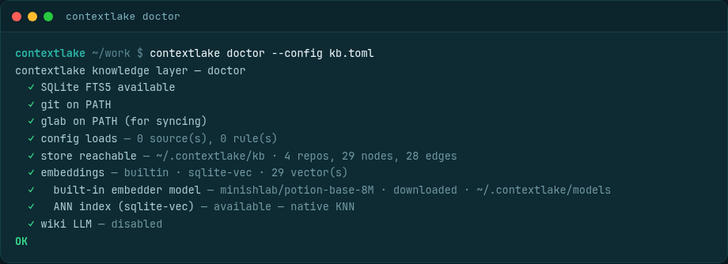

Knowledge layer
Turn the mirror into a queryable graph with search, a wiki, and connectors.

An optional subsystem (contextlake.kb) turns your mirrored repositories into a queryable knowledge
graph and serves it to AI agents over MCP, so an assistant can ask "where is X defined?", "who
calls Y?", or "which repos depend on package Z?" instead of grepping hundreds of repos. It's generic:
it indexes any repositories and connects to any configured knowledge sources; no deployment-specific
data lives in the package (your sites, keys, and rules go in a private config file).
This page orients you; each stage below has its own focused page.
flowchart LR
IDX["kb index"] --> CON["kb connect"] --> EMB["kb embed"] --> WIK["kb wiki"] --> SRV(["kb serve"])
IDX -.->|"parses source"| G[("the graph")]
CON -.->|"links tickets,
designs, threads"| G
EMB -.->|"builds vectors"| V[("vectors")]
WIK -.->|"writes cited prose"| W[("wiki pages")]
SRV --> AG(["your AI tools,
answering with citations"])
Each stage adds to the same store, and you can stop after any of them. Run the whole chain with one
command using bootstrap, or work through it stage by stage below.
Install the extra#
The knowledge layer needs the [kb] extra (Python 3.10 or newer), or [kb-full] if you
also want local semantic search with no Ollama and no API key. See
Install and upgrade for every channel and the full extras table.
pip install "contextlake[kb-full]"
contextlake doctor # check the environment
contextlake doctor verifies the whole layer in one pass (FTS5, git / glab on PATH, the store's real
counts, the built-in CPU embedder, and the ANN index) and exits non-zero if anything is wrong, so it
doubles as a CI health gate:

The fastest way to build all of it is one command, contextlake bootstrap (see
Bootstrap and keep it fresh). The rest of this section is the map of what that pipeline does,
stage by stage.
Building it, stage by stage#
- Index the code graph: parse your repos into a typed graph of files, symbols, call/inheritance edges, infrastructure, SQL, and web topology.
- Connect and enrich: link repos to their issues, docs, and designs, ingest external documents, and pull grounded external facts in.
- Semantic search: embed the graph for natural-language and hybrid retrieval,
and measure retrieval quality with
eval. - Generate the wiki: turn the graph into grounded, council-verified prose per repo (and per namespace).
- Model providers: choose the embeddings and wiki backend (built-in CPU, Ollama, OpenAI, Anthropic, or an agent CLI).
- Bootstrap and keep it fresh: run the whole pipeline in one command and keep it current.
Using what you built#
- Serve it to your editor: expose the graph over MCP so agents query it directly.
- The dashboard: a local, offline-first UI over the whole knowledge system.
- Visualize the graph: bounded interactive graph slices and the C4 diagram.
- Ask the graph: query it, trace what a change would break, and find who owns it.
For the command list see the contextlake command reference; to decode a run see
Reading the console output.